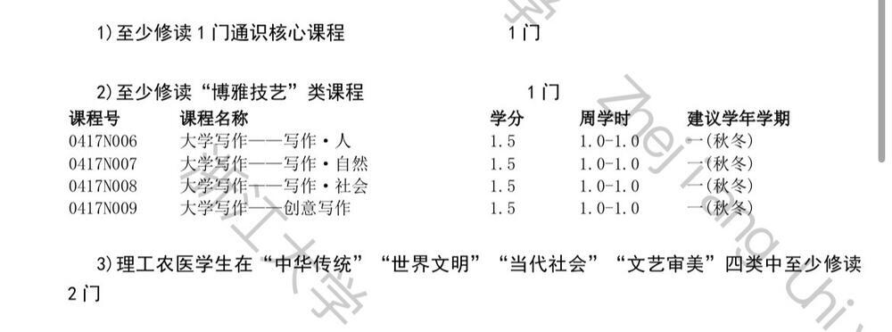
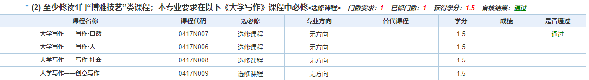

新课标通识选修课程
zju开了许多门（也许有近百门）通识选修课程（常被称为通识课），要求每人修读一定学分并满足相应类别要求。这些课程种类多样，覆盖领域极广，此处仅对我上过的课程做介绍。
（0113N002）经济法理论与实务（当代社会）
- 考核方式：40%作业（一份合同）+60%期末（开卷）
- 课程内容是以民法典为基础，包括合同法，公司法，知识产权法，经济竞争法，金融法，劳动法，经济仲裁与经济诉讼等内容。非常有趣而且实用，很值得一听。
- 合同作业非常简单，按照课本上的模板写就行。
- 开卷考试建议好好准备，倒不是说要多仔细地看书，主要是要准备mooc题库、课本例题答案、资料，当然还有第二版课本，如果课一点没听的话建议过一下老师的ppt。这门课虽然大家都说给分好，毕竟不是人人都能85+的。
（1213N001）无障碍融合:人居与文明（科技创新）
- 考核方式课堂表现+期末（开卷）
- 课程内容主要是无障碍相关的，什么是无障碍呢，建议百度。不过，当你上过这门课之后，这个词在你心中会有和百度百科不一样的理解。
- 课程内容极其丰富，除了介绍无障碍环境建设相关知识之外，老师还会邀请盲人调音师和他的导盲犬，残联主席，亚残运会冠军等等来到课堂。老师本人也是一个很有趣的人（个人感觉很有艺术家气息），他的课堂绝对是不无聊的。
- 虽然是长学期课程，但是没有任何强制的平时作业，老师会在课后布置随堂作业但并不是强制做的，不过课堂上会统计发言次数，期末是开卷考试（按老师的话说是为我们节省时间，毕竟考试只用最多两小时，写论文肯定不止这个时间）。课程完全不点名。给分感觉也还不错。
- 总而言之是一门内容有趣有价值，课程水，给分还不错，占用课时少（只占用一个晚上，不妨碍选通核）能方便凑学分的课，选了绝对不亏。
- 不过这门课要拿很高分（4.5+）的话，建议大家不要经常翘课。因为期末考试除了大题还包括填空题判断题，填空题主要是填课程嘉宾的姓名，所以大家务必关注，毕竟导盲犬只能叫阿拉丁不能叫66666a，判断题则主要是老师上课讲的重点内容，一节课都不来的话期末分数就很可能低下去。大题倒是没啥好准备的，建议带一本课本（课本内容能覆盖ppt内容，有课本就不用打印ppt了），并且关注老师最后一节课的内容。当然，适当的课堂发言也是必要的，不过老师是不鼓励卷发言的，不发言也没事。
（0415S002）文学与人生（文艺审美/通识核心/美育）
- 考核方式：小组展示+讨论课发言+期末论文
- 主课程内容算是通俗易懂的，内容丰富且有趣，也不点名。
- 但是讨论课上的真的难受。每节课要么课上发言要么课下发言，但是每次都要发言（对于不擅长的同学建议克服一下课上发言的恐惧，尽可能课上发言，课上发言评分会高些，实在没啥想说的建议借助gpt）。而且整个课程有5个小组pre，事非常多。
- 论文要好好写，占比蛮大的，如果感觉自己不太会写的话，至少多卷点字数。
（1916N001）从神农本草到现代中药（生命探索）
- 考核方式：10%平时（到课/课后文献阅读）+30%小组作业+60%论文
- 坏消息是虽然课后文献阅读是附加分，但毕竟大家越来越卷了还要限制优秀率，所以建议还是写点。
- 好消息是这门课给分一般，大概率是给不满30%的90+的，所以限制优秀率无所谓。（以前是五级制的，给分更烂，现在还凑合）。
- 论文和小组作业工作量不是很大，课程总体还比较轻松的。
（1916N001）健康与免疫（生命探索）
- 考核方式：10%平时（有一次点名性质的小测试）+20%小展示+30%大展示+40%期末（开卷，5道简答题）
- 小测试的题目为“你对免疫系统的了解”，小展示主题为AIDS相关，大展示有选题列表，要求12min左右，时间过长或过短均酌情扣分
- 个人感觉任务有点多，尤其是夏学期临近考试周和大量ddl还要排练展示有点难蚌。对没学过生物的有点不友好，但问题不算大。总体来说无功无过，对课程内容感兴趣的话不必犹豫，选就是了，只是想凑学分的话选了问题也不大。
- 然后老师曾说过“展示上台的人多显示出你们小组的合作默契”，所以展示可能要想办法多上去一些人。
- 考试不用复习，基本上就是嗯抄打印的ppt，当时抄了一面半A3纸。开卷考题目里的第二题的“魏则西事件”，课上讲过但ppt里并没有详细写，充其量只算是补充故事，但是考到了，怀疑是检测有没有听课。
回忆卷，有反馈会考原题
开卷考题目本人写的原帖链接
1.通过本课程学习及日常体会，谈谈你对免疫器官的分类定义以及具体功能的认识，并结合自身感悟谈谈日常生活如何更好地维持免疫器官健康。
2.什么是“魏则西事件”？结合魏则西的治疗过程谈谈你对肿瘤免疫治疗的认识。
3.有些人养猫时会出现超敏反应，说明此种超敏反应的类型，致敏原，并从抗体，细胞，活性介质等角度介绍该超敏反应的机理。
4.从传统疫苗和新型疫苗的角度谈谈疫苗的分类，并阐述现在国内外有哪些类型的新冠疫苗。
5.阐述《中国居民膳食指南（2022）》中的八个原则，并结合《中国居民平衡饮食宝塔（2022）》设计自己一天的饮食（写上性别，身高，体重，一天运动量等信息）。
（0417N007）大学写作——写作·自然（博雅技艺）
- 考核方式：2* 10%作业+10%平时表现+2*5%讲座+20%读书笔记+40%科普文章。
- 当你的培养方案是这样时，  恭喜你，你将被强迫学习一门极其好选的博雅技艺。虽然看起来只是建议，但毕业资格自审会显示 “本专业要求在以下《大学写作》课程中必修”,如下图 
- 课程在前半个学期是大班课形式，每节课老师不同，每个老师会讲一个不同的点，有一次课上小作文和课后作业，还会有提前通知的签到。在后半个学期是小班课模式，每个小班课会有不同的老师讲课，并布置作业，就我修读的大学写作·自然来说，需要写一篇自然科学类书籍读书笔记和自然科学类科普文章（当然具体老师要求不同）。另外，课程需要在周末参加两次讲座，讲座总共三次，但是每个班只通知两次，都要进行签到。这就导致比如你们班通知第1，2次，你有一次因故没去，想在第3次上补，会由于第3次讲座不通知而错过，因此若要请假务必联系助教。
- 从我修读大学写作·自然的感受来说，这门课的课程设计有些问题，在后半学期，部分来自专业学院的老师事实上并不懂得如何教好写作，全靠（可能是课程组设计的）ppt和讲评学生文章（在学生文章里找一些有的没的错误）凑时间。更奇怪的是，我作为一个工科学生，选到的小班课班老师是一位医学院老师，他的课中有大量的医学相关科普性质内容，建议的作业选题也与医学有关。后来我在教务网中发现，实际上每个大学写作班都有它的面向对象，而我恰好选了那个面向基础医学强基班的课。 不过，并不是说大家一定要去选面向自己专业的老师，还是老师好最重要。
- 这门课特点是前半学期很空后半学期很忙，但是前半学期又没法知道后半学期老师的作业要求，可以向前人询问小班课老师的作业要求和给分情况，所以建议在后半学期刚开始就着手写作业以免ddl堆积，而且部分老师还会把先写好的文章拿到课上讲评，可能有助于提升作业质量。